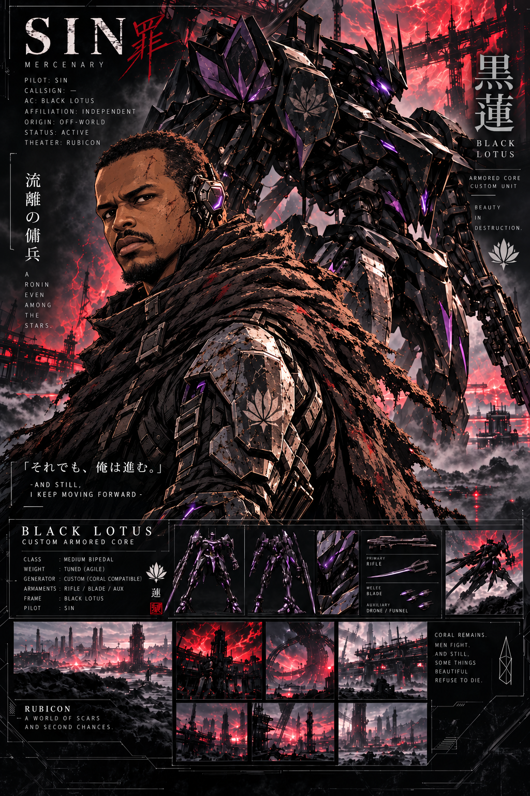

Main Character
Sin / Black Lotus
An independent mercenary with the bearing of a wandering shinobi and the discipline of a lost samurai, moving through Rubicon inside a machine that feels almost mythic.
Sin is the heart of the story: calm, dangerous, and hard to fully read. His fighting style favors measured movement, sharp timing, and sudden decisive violence. Black Lotus gives that identity shape—a custom armored core with an elegant silhouette, violet energy accents, and a rumor-cloaked origin that makes it feel like it came from somewhere beyond the worlds Rubicon knows.
Main POVCoral Synchronization 52%Coral SenseALLMIND Priority Subject